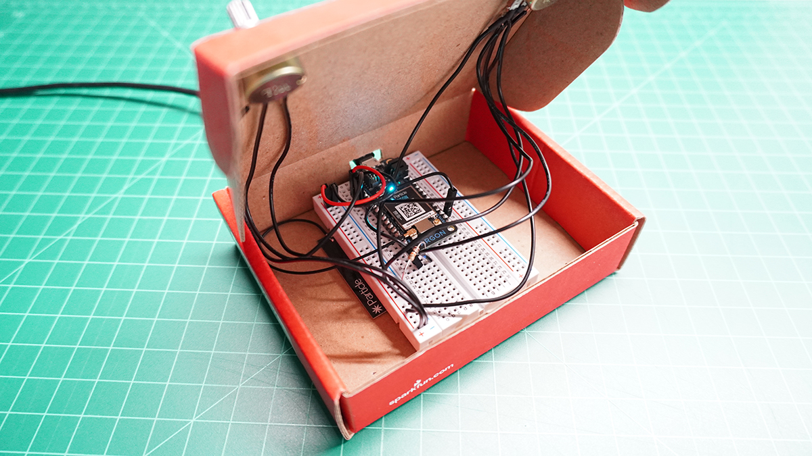
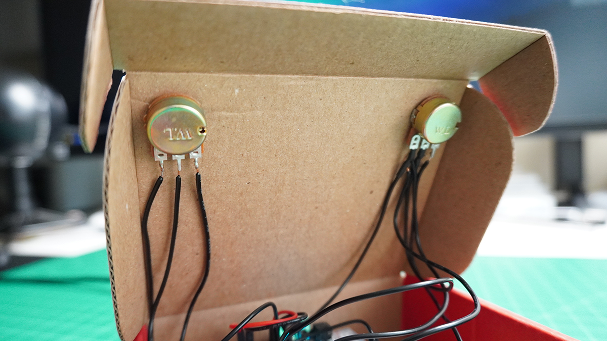

Project 2: Interactive Natural System
The second project introduces a Particle Argon board taking inputs from potentiometers and a tactile button and sending strings of data to be used in the Natural System. To keep things easier to manage, I opted to forgo the whole tadpole eats lettuce and focused on the frog eating the flies.
One major addition to this is the rewriting of code to incorporate forces that repel the flies from the frog. Initially I began by writing in PVectors in place of variables like posX and posY. A few iterations in I found it best to just start from scratch and write the code around these parameters and then bring the frog and fly images in.
The controller is built into a Sparkfun box with the tactile button placed just above the right potentiometer knob. The left knob controls the X axis movement and the right knob controls Y axis movement, much like an Etch-a-Sketch. However, these controls are mapped to full negative or full positive velocity, so unlike an Etch-a-Sketch "cursor", the frog continues in the directions according to the knob positions. The tactile button serves to eat the flies, but only if they are within the set "striking range"
The controller:



For your viewing consideration, a quick demo video:
For future consideration, I would probably add a left tactile button, just for left handed or even ambidextrous engagement.